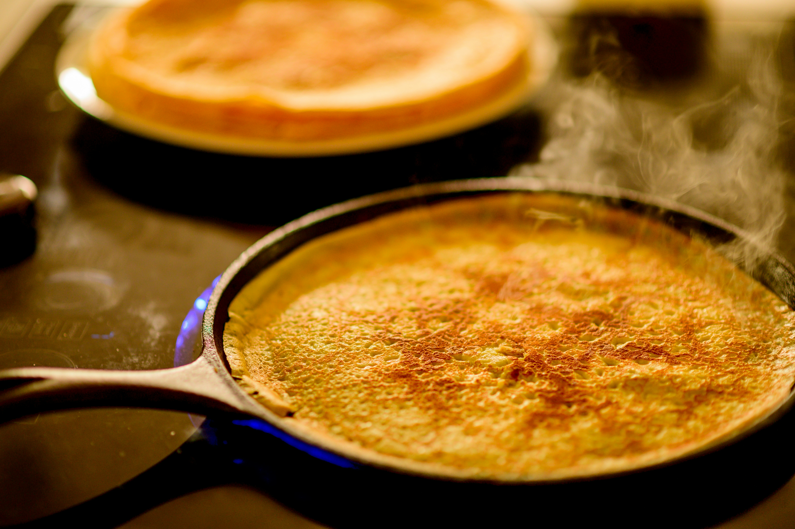

Home
Crepes

Photo by Philippe Murray-Pietsch on Unsplash
Description
This is a simple crepe recipe I always use, based on
BBC GoodFood's one.
I've tweaked it a bit, as I don't think the original is as good as it could be.
The best crepes are ones made with what you have, in the amounts you deem fit for what
you like in a crepe. I'll put in the amounts I'd start with, but also include what to
change and what to look for in order to make those changes. Bone apple tea!
Ingredients
- 140g Plain Flour
- 200ml Whole Milk
- 2 Large Eggs
- 25g Unsalted Butter
- 1/2tsp Vanilla Extract
- Spray Oil or Melted Butter (for greasing)
Steps
- Using a measuring jug, add the milk and 100ml of water and stir them together.
- Crack the eggs into the jug and whisk them in with the vanilla extract.
- Sift the flour with a pinch of salt into a medium-size bowl, then make a well in the middle.
- Add the wet ingredients into the well in a steady stream, whisking constantly and gradually incorporating the flour.
- Whisk well, making sure there are as few lumps as possible, or at least no big ones.
- Leave the batter to rest (in the fridge) for 30 mins minimum, which will allow the remaining lumps to dissolve.
- 5 minutes before the rest is done, microwave the butter for 30 seconds, checking and stiring halfway through.
- Check the butter and batter are similar temperatures before combining well. This is important because otherwise the butter will solidify!
- Heat a pan until butter immediately melts on it. Paint/spray the pan lightly with your oil/butter.
- Use a ladle to pour just enough batter to coat the bottom of the pan.
- Cook on one side until the pancake starts to curl away from the edges of the pan, then flip.
- Wait a little longer, then check for cooked spots on the underside. It will vary from crepe to crepe, as will individual taste, so this will get easier as you go.
- Once done, pop the crepe out onto a plate which you can keep warm in the oven on the lowest convection setting.
Final Notes
And that's it! Keep repeating steps 9-12 until you're out of batter (or until you're full!),
making sure to keep the greasing light, especially if you're using a non-stick pan. If in doubt
grease only every 2-3 crepes. If using melted butter for greasing, beware of it burning. If the
pan is the right temp it will brown very quickly (which smells amazing), but then with consecutive
crepes it will burn and smoke. Keep the hob hood on a reasonable setting, there will be some smoke.
Crepes are really simple, but getting them perfect takes some practice. I've rarely gotten close to
anything perfect, but here are some hopefully helpful observations to guide you.
- Thickness of the crepe affects a lot. Go as thin as you possibly can. This can take a few fat or holey crepes at first.
- Heat also works in tandem with the thickness. You want the pan as hot as you can without smoking all your oil/butter.
- The rest time is annoying, but necessary. If you're really desperate, you can use a shorter rest with a lot of whisking, or a quick electric whisk.
- If you can't seem to get the lacy crisp you're looking for, more milk/water in the ratio of ingredients will help.
- If you're missing any kind of body or "fluffing" (i.e it's literally as flat as a pancake), more egg is needed. This is the most irritating ingredient ratio, but fortunately the least consequential. You don't want an omlette though, so go under if you're unsure.
- Finally, if there's a wateriness to them, lacking a "cooked" flavour, add more flour. Be careful though, as flour can clump if added later, so be sure to add it in a slurry.